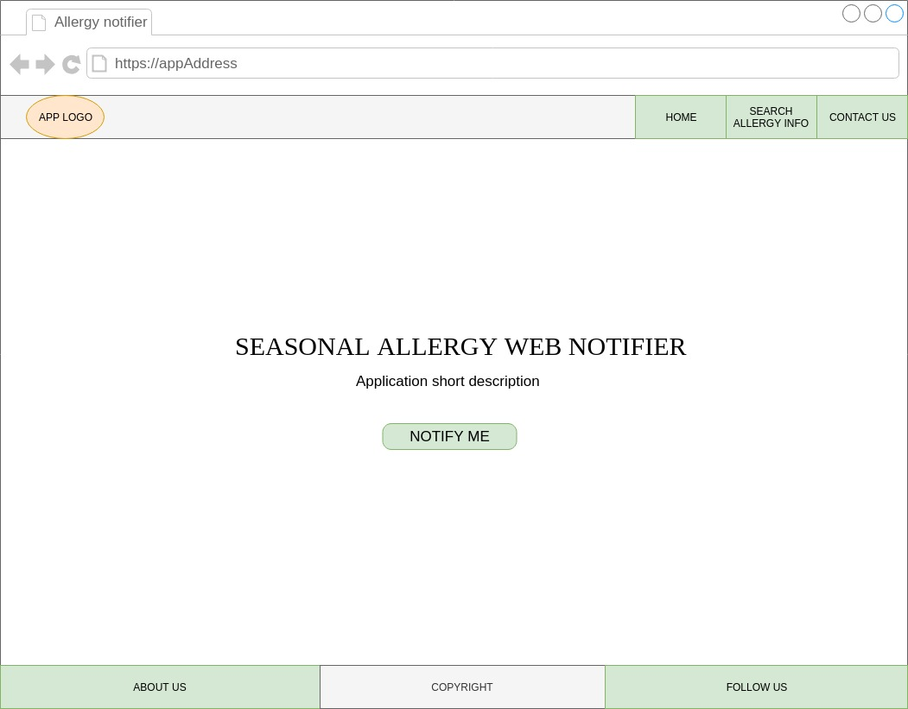
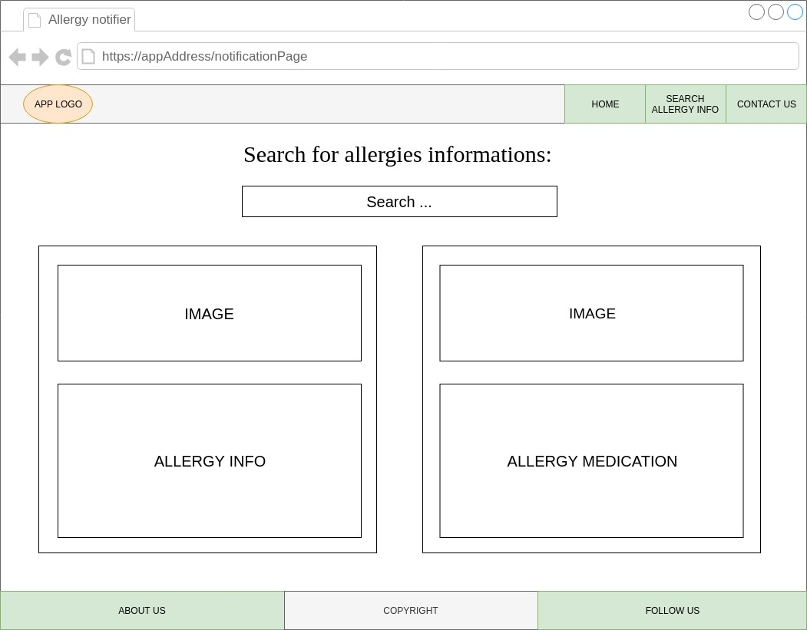
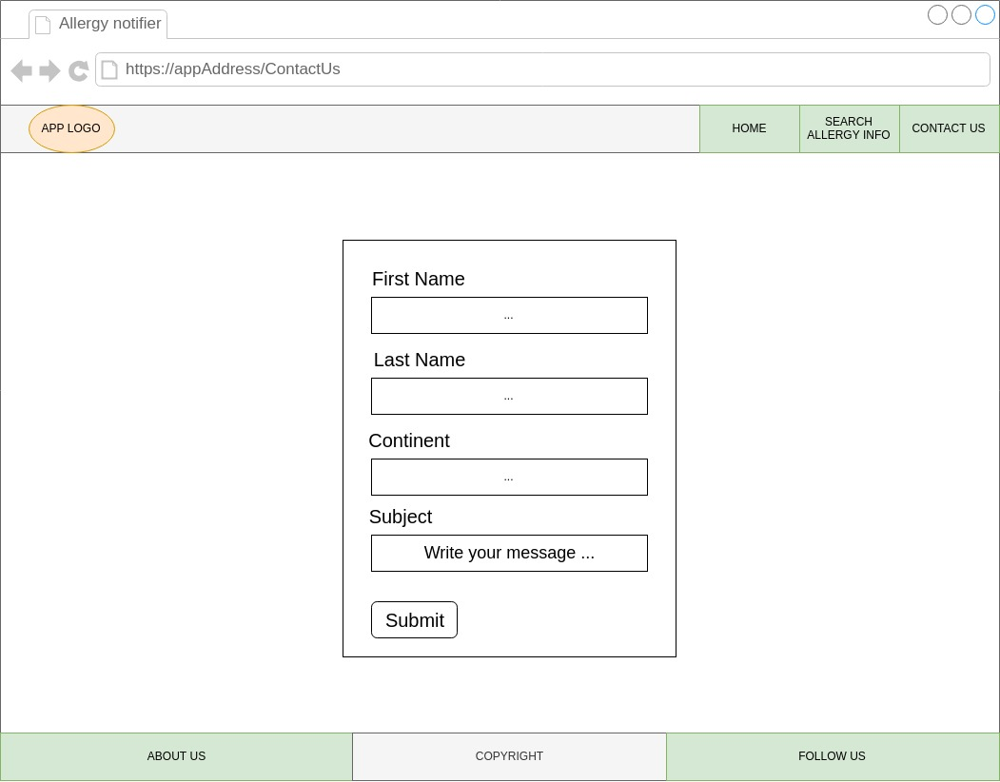

Seasonal allergy web notifier
Tema proiectului
Să se realizeze o aplicaţie Web – eventual, o extensie de navigator – capabilă să notifice direct în browser o persoană şi grupul de "prieteni" ai acesteia din cadrul unei reţele sociale asupra apariţiei unei alergii sezoniere: la polen, la expunere directă la soare sau la praf, în conjuncţie cu anumite fructe ori compuşi alimentari etc. – a se consulta WebMD Allergies Health Center. Procesul de notificare – în cadrul navigatorului Web – va considera o anumită prioritate şi/sau frecvenţă. Pe baza unor date externe, încărcate dinamic, la cerere, se vor pune la dispoziţie sfaturi referitoare la preîntâmpinarea unei/unor alergii, plus tratamentul şi/sau medicaţia. Se vor oferi, de asemenea, vizualizări 2D/3D atractive – pe baza SVG şi WebGL – ale datelor raportate şi statisticilor generate.
Designul general al aplicatiei
Proiectul va fi implementat sub forma unei aplicatii web. Aceasta va permite notificarea unei persoane cu privire la aparitia unei alergii de sezon in perioada imediat urmatoare. Persoana in cauza poate fi un utilizator al aplicatiei care a cerut in mod direct sa fie notificata, sau poate face parte din lista de prieteni ai unei persoane care a cerut sa fie notificata cu privire la o posibila alergie de sezon si aceasta a optat sa ii transmita notificarea prin intermediul unei retele de socializare. Pe langa informatiile legate de sezoanele de alergie, aplicatia va pune la dispozitia utilizatorului ei si o recomandare de tratament / medicatie corespunzatoare. Acest lucru se va intampla in mod direct cand utilizatorului ii va aparea o notificare legata de o alergie, insa acesta poate cauta informatii cu privire la o alergie si tratamentul / medicatia potrivita fara ca o notificare sa fie transmisa. Datele referitoarea la alergii si la tratamentele pentru acestea se vor primi in urma unor interogari a unor APIuri. Utilizatorul aplicatiei va putea de asemenea sa consulte statistici referitoare la numarul de sezoane de alergii din lunile precedente si alte informatii reprezentate sub forma unor vizualizari 2D/3D.
Schite pagini aplicatie
Schita pagina index
Schita pagina notificare
Schita pagina contact
Maniera de folosire a sistemului de management al codului sursa
Pentru managementul codului sursa am ales sa folosim platforma GitHub Inc. Intrucat la elaborarea acestui proiect participam doar doi studenti, am considerat ca nu este neaparat necesara crearea unor branch-uri individuale carora sa li se faca merge in branch-ul master si ca putem face commit-urile direct pe master branch. Pentru ca sa minimizam sansele unor conflicte pe fisierele proiectului, fiecare pagina HTML are o pagina de stiluri corespunzatoare astfel incat fiecare dintre noi sa putem lucra pe cate o pereche de fisiere HTML / CSS fara sa riscam sa cauzam conflicte. De asemenea, inainte de inceperea lucrului la o noua parte a proiectului, fiecare din cei doi ne vom asigura ca vom executa mai intai comanda 'git pull' si abia apoi vom edita codul sursa astfel incat sa nu cauzam conflicte / situatii care sa necesite merge-uri.
Maniera de interactiune cu utilizatorul
Un utilizator ajunge sa interactioneze cu aplicatia fie accesand in browser adresa aplicatiei, fie ca urmare a faptului ca acesta face parte din grupul de prieteni ai unui utilizator al aplicatiei care a cerut sa fie notificat de catre aceasta in situatiile in care probabilitatea aparitiei unei alergii sezoniere e ridicata. Considerand cazul in care un vizitator acceseaza aplicatia si da click pe butonul "NOTIFY ME", acestuia ii va aparea in browser o fereastra prin care i se cere dreptul de a include aplicatia in lista "Allow" din cadrul browserului. Daca acesta alege sa acorde aceasta permisiune, in momentul in care algoritmul de pe serverul aplicatiei determina pe baza datelor returnate de la un API ca exista posibilitatea formarii unor alergii sezoniere, functie de o anumita frecventa acesta va primi notificari in legatura cu aceste posibile alergii impreuna cu sfaturi referitoare la tratamentul / medicatia corespunzatoare. Daca utilizatorul alege sa nu acorde permisiunea aplicatiei, adresa acesteia va fi inclusa in lista "Block" a browserului si nu va primi notificari. Daca ulterior doreste sa primeasca aceste notificari, utilizatorul poate muta adresa aplicatiei din lista "Block" in lista "Allow". Cererea permisiunii de notificare in cadrul aplicatiei este realizata cu ajutorul interfetei Notification care face parte din Notifications API. Exceptand cazul notificarii generate de serverul aplicatiei, utilizatorul poate beneficia de informatii referitoare la posibile sezoane de alergii accesand aplicatia si cautand informatiile in pagina dedicata cautarilor. Rezultatul unei astfel de cautari este reprezentat prin date referitoare la perioada calendaristica in care ar putea aparea alergia, efectele pe care aceasta le are asupra celor afectati, si alte date referitoare la alergie impreuna cu sfaturi / recomandari pentru tratarea / prevenirea alergiei. In cazul in care un utilizator este notificat de catre aplicatie, acesta are posibilitatea de a-si notifica la randul lui prin intermediul unei retele de socializare persoane din grupul de prieteni. Un vizitator al aplicatiei poate de asemenea sa contacteze echipa de administrare a acesteia completand un formular gasit pe pagina "Contact Us" prin care pot face observatii cu privire la continutul aplicatiei, pot trimite sugestii, etc. De asemenea, persoana care ar vizita aplicatia poate afla mai multe informatii cu privire la scopul acesteia, cu privire la echipa din spatele aplicatiei si alte informatii accesand linkul "About us".